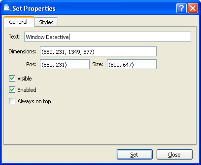

Aby zmodyfikowaæ atrybuty okna, nale¿y klikn¹æ wybrany element prawym przyciskiem myszy w widoku drzewa i wybraæ polecenie "Zmieñ atrybuty". Zostanie wyœwietlone okno dialogowe pozwalaj¹ce na zmianê parametrów okna, w tym stylów. Nie wszystkie atrybuty mo¿na modyfikowaæ.

Okno dialogowe "Zmieñ w³aœciwoœci okna"
Poni¿ej znajduje siê lista atrybutów okien, które mo¿na modyfikowaæ.
| Tekst | Ustawia tekst okna lub obiektu. |
| Wymiary/Pozycja/Rozmiar | Okreœla pozycjê lub rozmiar okna lub obiektu. Wartoœæ jest wyra¿ona w pikselach, gdzie "0,0" oznacza lewy górny róg ekranu. |
| Widocznoœæ | Okreœla, czy wybrane okno ma byæ widoczne. |
| Aktywacja | Okreœla, czy wybrane okno ma byæ aktywne. |
| Zawsze na wierzchu | Okreœla, czy okno ma pozostaæ na wierzchu, nawet gdy jest nieaktywne. |